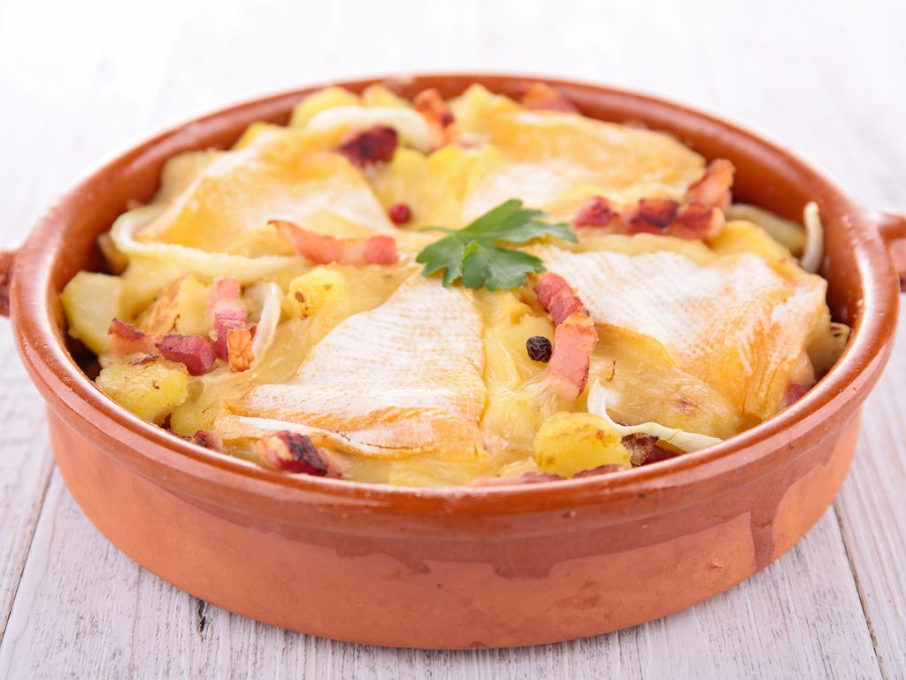

Tartiflette

Tartiflette de nos régions
Finies les petites salades composées de l'été ! Pour affronter le
froid rude de l’hiver, rien ne vaut la générosité de la tartiflette.
Originaire de Savoie, ce plat gratiné fut initialement créé pour
valoriser une star fromagère locale : le Reblochon. Apprêté avec
quelques pommes de terre, de la crème fraîche, des lardons et des
oignons, il constitue un mets réchauffant et convivial qui fait
flotter l’esprit de montagne à table.
Ingrédients
- 1.5kg Pomme de terre a chait ferme
- 150g Allumettes de lardons fumé
- 1 verre de Vin blanc sec
- 3 c. a soupe Huile
- 10 grain Poivre blanc
- 500g Reblochon
- 100g Crème fraiche épaisse
- 3 Oignons
- 1 c. a soupe Gros sel
- 1 pincée Noix de muscade
Préparation
-
Lavez soigneusement les pommes de terre. Remplissez un grand
faitout d’eau et jetez-y le gros sel. Plongez les pommes de
terre dans l’eau et faites-les cuire pendant 20 min après la
reprise de l’ébullition.
-
Pelez et émincez les oignons, en veillant bien à ôter le germe.
Dans une poêle, faites chauffer l’huile et faites-y revenir les
oignons émincés. Lorsqu’ils deviennent translucides, ajoutez-y
les allumettes de lardons fumés. Poursuivez la cuisson en
remuant régulièrement à l’aide d’une cuillère en bois, jusqu’à
ce que les oignons et les lardons soient bien dorés. Déglacez la
poêle avec le vin blanc et poursuivez la cuisson pendant 5 min.
Réservez
-
Préchauffez le four th.6-7 (200°C). Découpez le reblochon en
longues lamelles. Dans un pilon, écrasez les grains de poivre
blanc. Pelez les pommes de terre cuites et coupez-les en grosses
rondelles.
-
Beurrez un grand plat à four ou de petits contenants
individuels. Saupoudrez de noix de muscade et parsemez de poivre
blanc concassé. Répartissez-y les pommes de terre, puis les
oignons et les lardons dorés au vin blanc. Recouvrez le tout de
crème fraîche, puis étalez-y les lamelles de fromage. Enfournez
la tartiflette pendant 30 min, jusqu’à ce que le reblochon forme
une croûte bien dorée et gratinée.
-
Servez votre délicieuse tartiflette bien chaude, dès la sortie
du four, accompagnée d’une belle salade verte à la vinaigrette
et d’un verre de vin blanc de Savoie.